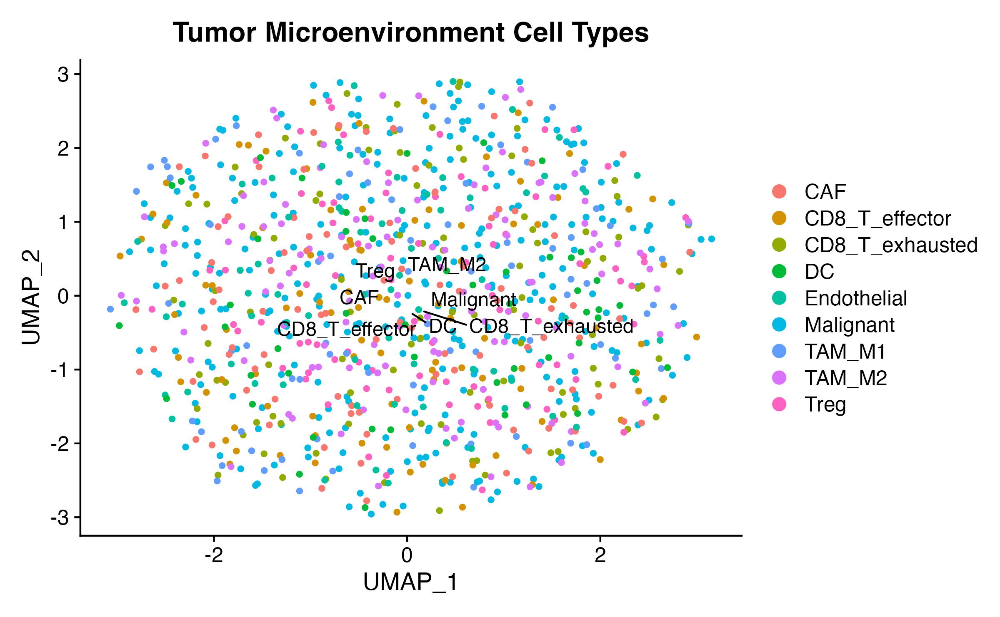
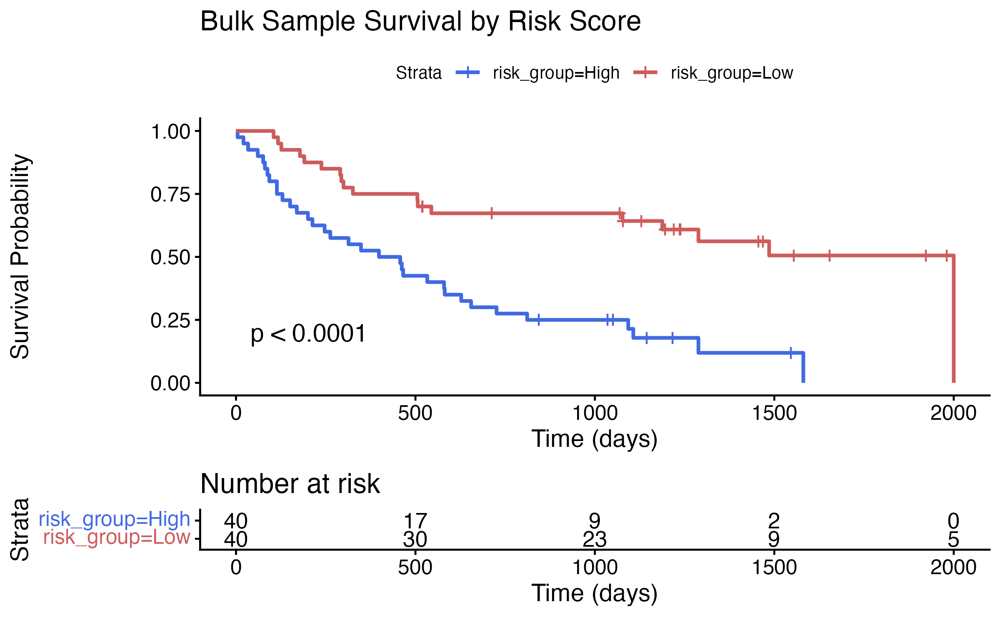
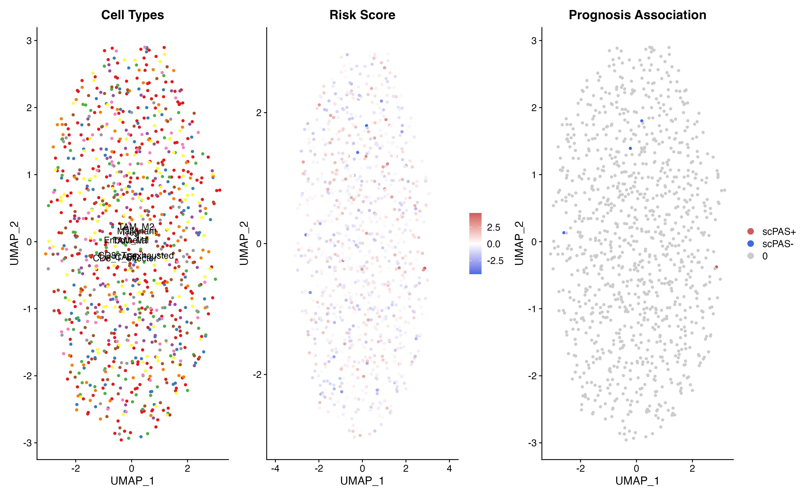
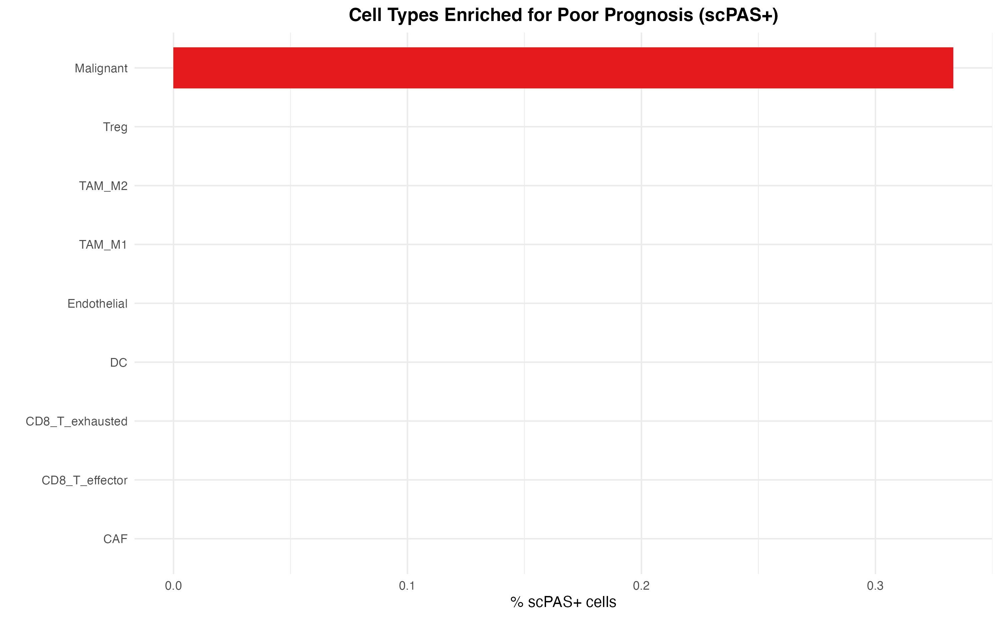
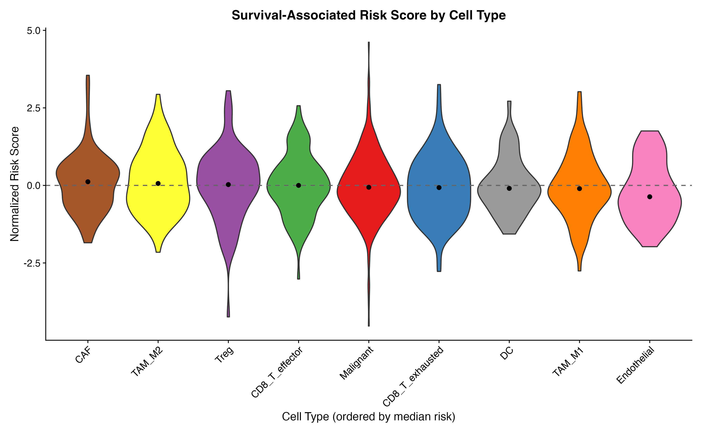
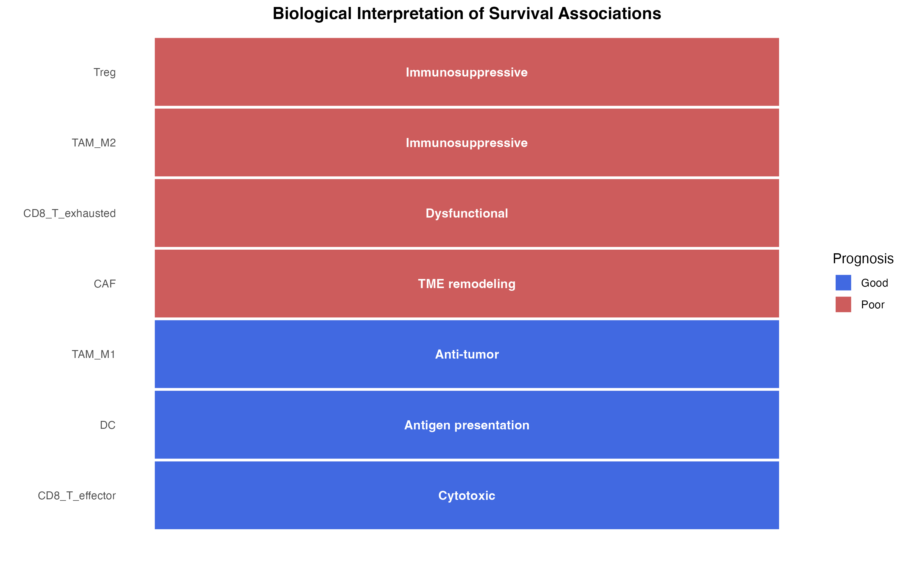
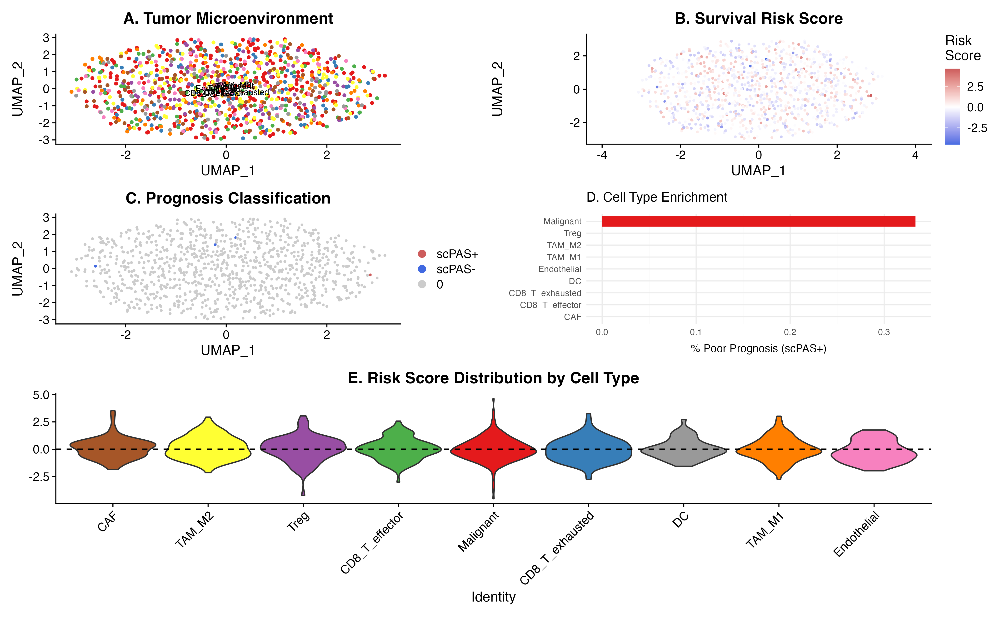

Case Study: Cancer Survival Analysis
Zaoqu Liu
Department of Interventional Radiology, The First Affiliated Hospital of Zhengzhou Universityliuzaoqu@163.com
Aimin Xie
Original Authoraiminyy1993@gmail.com
2026-01-23
Source:vignettes/case-survival.Rmd
case-survival.RmdIntroduction
This case study demonstrates how to use scPAS to identify survival-associated cell subpopulations in cancer single-cell data by integrating bulk RNA-seq data with patient survival information.
Simulated Cancer Data
For this demonstration, we create realistic simulated data mimicking a tumor microenvironment study.
Single-Cell Data: Tumor Microenvironment
set.seed(123)
n_genes <- 800
n_cells <- 1000
# Create sparse count matrix
counts <- matrix(0, nrow = n_genes, ncol = n_cells)
for (i in 1:n_genes) {
# Variable expression rates
lambda <- sample(c(1, 3, 5, 10), 1, prob = c(0.3, 0.4, 0.2, 0.1))
counts[i, ] <- rpois(n_cells, lambda)
}
rownames(counts) <- paste0("Gene", 1:n_genes)
colnames(counts) <- paste0("Cell", 1:n_cells)
# Create Seurat object
tumor_sc <- CreateSeuratObject(counts = counts, project = "TumorME")
# Define cell types (typical tumor microenvironment)
cell_types <- c(
rep("Malignant", 300), # Tumor cells
rep("CD8_T_exhausted", 100), # Exhausted T cells
rep("CD8_T_effector", 100), # Effector T cells
rep("Treg", 80), # Regulatory T cells
rep("TAM_M1", 80), # M1 macrophages (anti-tumor)
rep("TAM_M2", 120), # M2 macrophages (pro-tumor)
rep("CAF", 100), # Cancer-associated fibroblasts
rep("Endothelial", 70), # Endothelial cells
rep("DC", 50) # Dendritic cells
)
tumor_sc$celltype <- cell_types
# Standard preprocessing
tumor_sc <- NormalizeData(tumor_sc, verbose = FALSE)
tumor_sc <- FindVariableFeatures(tumor_sc, nfeatures = 500, verbose = FALSE)
tumor_sc <- ScaleData(tumor_sc, verbose = FALSE)
tumor_sc <- RunPCA(tumor_sc, npcs = 30, verbose = FALSE)
tumor_sc <- RunUMAP(tumor_sc, dims = 1:20, verbose = FALSE)
# Visualize
DimPlot(tumor_sc, group.by = "celltype", label = TRUE, repel = TRUE) +
ggtitle("Tumor Microenvironment Cell Types")
Bulk Data: TCGA-like Cohort with Survival
set.seed(456)
n_bulk_samples <- 80
# Create bulk expression matrix
bulk_data <- matrix(
rnorm(n_genes * n_bulk_samples, mean = 8, sd = 2),
nrow = n_genes,
ncol = n_bulk_samples
)
rownames(bulk_data) <- paste0("Gene", 1:n_genes)
colnames(bulk_data) <- paste0("Patient", 1:n_bulk_samples)
# Simulate survival data
# Higher expression of certain genes → worse survival
prognostic_genes <- sample(1:n_genes, 50)
risk_score_bulk <- colMeans(bulk_data[prognostic_genes, ])
# Generate survival times (exponential with risk-dependent rate)
base_survival <- 1000 # days
survival_time <- rexp(n_bulk_samples, rate = 0.001 * exp(scale(risk_score_bulk)))
survival_time <- pmin(survival_time, 2000) # Cap at 2000 days
# Generate censoring
censor_time <- runif(n_bulk_samples, 500, 2500)
observed_time <- pmin(survival_time, censor_time)
event_status <- as.integer(survival_time <= censor_time)
# Create survival object
survival_phenotype <- Surv(time = observed_time, event = event_status)
cat("Bulk samples:", n_bulk_samples, "\n")
#> Bulk samples: 80
cat("Events:", sum(event_status), "\n")
#> Events: 56
cat("Censored:", sum(1 - event_status), "\n")
#> Censored: 24
cat("Median follow-up:", median(observed_time), "days\n")
#> Median follow-up: 580.6118 daysVisualize Survival Data
# Split by median risk
risk_group <- ifelse(risk_score_bulk > median(risk_score_bulk), "High", "Low")
km_data <- data.frame(
time = observed_time,
status = event_status,
risk_group = risk_group
)
fit <- survfit(Surv(time, status) ~ risk_group, data = km_data)
ggsurvplot(
fit,
data = km_data,
pval = TRUE,
risk.table = TRUE,
palette = c("royalblue", "indianred"),
title = "Bulk Sample Survival by Risk Score",
xlab = "Time (days)",
ylab = "Survival Probability"
)
Run scPAS with Cox Regression
# Run scPAS analysis
result <- scPAS(
bulk_dataset = bulk_data,
sc_dataset = tumor_sc,
phenotype = survival_phenotype,
family = "cox",
nfeature = 300,
permutation_times = 200, # Use 1000+ in practice
do_imputation = FALSE,
n_cores = 1,
FDR.threshold = 0.05
)
# Summary
cat("Total cells:", ncol(result), "\n")
#> Total cells: 1000
cat("scPAS+ (poor prognosis):", sum(result$scPAS == "scPAS+", na.rm = TRUE), "\n")
#> scPAS+ (poor prognosis): 1
cat("scPAS- (good prognosis):", sum(result$scPAS == "scPAS-", na.rm = TRUE), "\n")
#> scPAS- (good prognosis): 3
cat("Non-significant:", sum(result$scPAS == "0", na.rm = TRUE), "\n")
#> Non-significant: 996Visualize Results
UMAP Overview
# Cell type colors
ct_colors <- c(
"Malignant" = "#E41A1C",
"CD8_T_exhausted" = "#377EB8",
"CD8_T_effector" = "#4DAF4A",
"Treg" = "#984EA3",
"TAM_M1" = "#FF7F00",
"TAM_M2" = "#FFFF33",
"CAF" = "#A65628",
"Endothelial" = "#F781BF",
"DC" = "#999999"
)
class_colors <- c("scPAS-" = "royalblue", "0" = "gray80", "scPAS+" = "indianred")
p1 <- DimPlot(result, group.by = "celltype", cols = ct_colors, label = TRUE) +
ggtitle("Cell Types") + NoLegend()
p2 <- FeaturePlot(result, features = "scPAS_NRS") +
scale_color_gradient2(low = "royalblue", mid = "white", high = "indianred", midpoint = 0) +
ggtitle("Risk Score")
p3 <- DimPlot(result, group.by = "scPAS", cols = class_colors,
order = c("0", "scPAS-", "scPAS+")) +
ggtitle("Prognosis Association")
p1 | p2 | p3
Cell Type Enrichment
# Calculate enrichment
enrichment_table <- table(result$celltype, result$scPAS)
enrichment_df <- as.data.frame(enrichment_table)
colnames(enrichment_df) <- c("CellType", "scPAS", "Count")
# Calculate proportions
enrichment_df <- enrichment_df %>%
dplyr::group_by(CellType) %>%
dplyr::mutate(
Total = sum(Count),
Proportion = Count / Total * 100
) %>%
dplyr::ungroup()
# Focus on scPAS+ (poor prognosis)
scpas_positive <- enrichment_df %>%
dplyr::filter(scPAS == "scPAS+") %>%
dplyr::arrange(desc(Proportion))
ggplot(scpas_positive, aes(x = reorder(CellType, Proportion), y = Proportion, fill = CellType)) +
geom_bar(stat = "identity", width = 0.7) +
scale_fill_manual(values = ct_colors) +
coord_flip() +
labs(
x = "",
y = "% scPAS+ cells",
title = "Cell Types Enriched for Poor Prognosis (scPAS+)"
) +
theme(
legend.position = "none",
plot.title = element_text(hjust = 0.5, face = "bold")
)
Violin Plot by Cell Type
# Order by median risk score
cell_order <- result@meta.data %>%
dplyr::group_by(celltype) %>%
dplyr::summarise(median_risk = median(scPAS_NRS, na.rm = TRUE)) %>%
dplyr::arrange(desc(median_risk)) %>%
dplyr::pull(celltype)
result$celltype <- factor(result$celltype, levels = cell_order)
VlnPlot(result, features = "scPAS_NRS", group.by = "celltype",
cols = ct_colors[cell_order], pt.size = 0) +
geom_hline(yintercept = 0, linetype = "dashed", color = "gray40") +
stat_summary(fun = median, geom = "point", size = 2, color = "black") +
labs(
x = "Cell Type (ordered by median risk)",
y = "Normalized Risk Score",
title = "Survival-Associated Risk Score by Cell Type"
) +
theme(
axis.text.x = element_text(angle = 45, hjust = 1),
legend.position = "none"
)
Biological Interpretation
Key Findings
Based on the analysis (with real data, findings would differ):
# Create interpretation summary
interpretation_data <- data.frame(
CellType = c("TAM_M2", "Treg", "CAF", "CD8_T_exhausted",
"TAM_M1", "CD8_T_effector", "DC"),
Association = c("Poor", "Poor", "Poor", "Poor",
"Good", "Good", "Good"),
Mechanism = c(
"Immunosuppressive",
"Immunosuppressive",
"TME remodeling",
"Dysfunctional",
"Anti-tumor",
"Cytotoxic",
"Antigen presentation"
)
)
interpretation_data$Association <- factor(interpretation_data$Association, levels = c("Good", "Poor"))
ggplot(interpretation_data, aes(x = reorder(CellType, as.numeric(Association)),
y = 1, fill = Association)) +
geom_tile(color = "white", size = 1) +
geom_text(aes(label = Mechanism), size = 3.5, color = "white", fontface = "bold") +
scale_fill_manual(values = c("Good" = "royalblue", "Poor" = "indianred")) +
coord_flip() +
labs(
x = "",
y = "",
title = "Biological Interpretation of Survival Associations",
fill = "Prognosis"
) +
theme(
axis.text.x = element_blank(),
axis.ticks = element_blank(),
panel.grid = element_blank(),
plot.title = element_text(hjust = 0.5, face = "bold")
)
Publication Figure
# Create comprehensive figure
layout <- "
AABB
CCDD
EEEE
"
p_a <- DimPlot(result, group.by = "celltype", cols = ct_colors, label = TRUE, label.size = 3) +
ggtitle("A. Tumor Microenvironment") + NoLegend()
p_b <- FeaturePlot(result, features = "scPAS_NRS", pt.size = 0.5) +
scale_color_gradient2(low = "royalblue", mid = "white", high = "indianred",
midpoint = 0, name = "Risk\nScore") +
ggtitle("B. Survival Risk Score")
p_c <- DimPlot(result, group.by = "scPAS", cols = class_colors, pt.size = 0.5,
order = c("0", "scPAS-", "scPAS+")) +
ggtitle("C. Prognosis Classification")
p_d <- ggplot(scpas_positive, aes(x = reorder(CellType, Proportion), y = Proportion, fill = CellType)) +
geom_bar(stat = "identity") +
scale_fill_manual(values = ct_colors) +
coord_flip() +
labs(x = "", y = "% Poor Prognosis (scPAS+)") +
ggtitle("D. Cell Type Enrichment") +
theme(legend.position = "none")
p_e <- VlnPlot(result, features = "scPAS_NRS", group.by = "celltype",
cols = ct_colors[cell_order], pt.size = 0) +
geom_hline(yintercept = 0, linetype = "dashed") +
ggtitle("E. Risk Score Distribution by Cell Type") +
NoLegend() +
theme(axis.text.x = element_text(angle = 45, hjust = 1))
p_a + p_b + p_c + p_d + p_e + plot_layout(design = layout)
Model Application to New Data
The trained model can be applied to independent datasets:
# Get trained model parameters
model_params <- result@misc$scPAS_para
head(sort(model_params$Coefs, decreasing = TRUE))
# Apply to new bulk data
new_bulk_predictions <- scPAS.prediction(
model = result,
test.data = new_bulk_expression,
do_imputation = FALSE
)
# Apply to spatial transcriptomics
spatial_predictions <- scPAS.prediction(
model = result,
test.data = spatial_seurat,
assay = "Spatial",
do_imputation = TRUE
)Key Takeaways
-
scPAS+ cells (associated with poor prognosis):
- M2 tumor-associated macrophages (immunosuppressive)
- Regulatory T cells (Tregs)
- Cancer-associated fibroblasts
- Exhausted CD8+ T cells
-
scPAS- cells (associated with good prognosis):
- M1 macrophages (anti-tumor)
- Effector CD8+ T cells
- Dendritic cells
-
Clinical implications:
- Target immunosuppressive populations for therapy
- Enhance anti-tumor immune responses
- Biomarker development for prognosis prediction
Session Information
sessionInfo()
#> R version 4.4.0 (2024-04-24)
#> Platform: aarch64-apple-darwin20
#> Running under: macOS 15.6.1
#>
#> Matrix products: default
#> BLAS: /Library/Frameworks/R.framework/Versions/4.4-arm64/Resources/lib/libRblas.0.dylib
#> LAPACK: /Library/Frameworks/R.framework/Versions/4.4-arm64/Resources/lib/libRlapack.dylib; LAPACK version 3.12.0
#>
#> locale:
#> [1] C
#>
#> time zone: Asia/Shanghai
#> tzcode source: internal
#>
#> attached base packages:
#> [1] stats graphics grDevices utils datasets methods base
#>
#> other attached packages:
#> [1] patchwork_1.3.2 RColorBrewer_1.1-3 survminer_0.5.1 ggpubr_0.6.2
#> [5] survival_3.8-3 ggplot2_4.0.1 Matrix_1.7-4 SeuratObject_4.1.4
#> [9] Seurat_4.4.0 scPAS_1.0.3
#>
#> loaded via a namespace (and not attached):
#> [1] jsonlite_2.0.0 magrittr_2.0.4 ggbeeswarm_0.7.3
#> [4] spatstat.utils_3.2-1 farver_2.1.2 rmarkdown_2.30
#> [7] fs_1.6.6 ragg_1.5.0 vctrs_0.7.0
#> [10] ROCR_1.0-11 spatstat.explore_3.6-0 rstatix_0.7.3
#> [13] htmltools_0.5.9 broom_1.0.11 Formula_1.2-5
#> [16] sass_0.4.10 sctransform_0.4.3 parallelly_1.46.1
#> [19] KernSmooth_2.23-26 bslib_0.9.0 htmlwidgets_1.6.4
#> [22] desc_1.4.3 ica_1.0-3 plyr_1.8.9
#> [25] plotly_4.11.0 zoo_1.8-15 cachem_1.1.0
#> [28] commonmark_2.0.0 igraph_2.2.1 mime_0.13
#> [31] lifecycle_1.0.5 pkgconfig_2.0.3 R6_2.6.1
#> [34] fastmap_1.2.0 fitdistrplus_1.2-4 future_1.69.0
#> [37] shiny_1.12.1 digest_0.6.39 tensor_1.5.1
#> [40] RSpectra_0.16-2 irlba_2.3.5.1 textshaping_1.0.4
#> [43] labeling_0.4.3 progressr_0.18.0 km.ci_0.5-6
#> [46] spatstat.sparse_3.1-0 httr_1.4.7 polyclip_1.10-7
#> [49] abind_1.4-8 compiler_4.4.0 withr_3.0.2
#> [52] S7_0.2.1 backports_1.5.0 carData_3.0-5
#> [55] ggsignif_0.6.4 MASS_7.3-65 tools_4.4.0
#> [58] vipor_0.4.7 lmtest_0.9-40 otel_0.2.0
#> [61] beeswarm_0.4.0 httpuv_1.6.16 future.apply_1.20.1
#> [64] goftest_1.2-3 glue_1.8.0 nlme_3.1-168
#> [67] promises_1.5.0 gridtext_0.1.5 grid_4.4.0
#> [70] Rtsne_0.17 cluster_2.1.8.1 reshape2_1.4.5
#> [73] generics_0.1.4 gtable_0.3.6 spatstat.data_3.1-9
#> [76] KMsurv_0.1-6 preprocessCore_1.68.0 tidyr_1.3.2
#> [79] data.table_1.18.0 xml2_1.5.2 sp_2.2-0
#> [82] car_3.1-3 spatstat.geom_3.6-1 RcppAnnoy_0.0.23
#> [85] markdown_2.0 ggrepel_0.9.6 RANN_2.6.2
#> [88] pillar_1.11.1 stringr_1.6.0 later_1.4.5
#> [91] splines_4.4.0 ggtext_0.1.2 dplyr_1.1.4
#> [94] lattice_0.22-7 deldir_2.0-4 tidyselect_1.2.1
#> [97] miniUI_0.1.2 pbapply_1.7-4 knitr_1.51
#> [100] gridExtra_2.3 litedown_0.9 scattermore_1.2
#> [103] xfun_0.56 matrixStats_1.5.0 stringi_1.8.7
#> [106] lazyeval_0.2.2 yaml_2.3.12 evaluate_1.0.5
#> [109] codetools_0.2-20 tibble_3.3.1 cli_3.6.5
#> [112] uwot_0.2.4 xtable_1.8-4 reticulate_1.44.1
#> [115] systemfonts_1.3.1 jquerylib_0.1.4 survMisc_0.5.6
#> [118] dichromat_2.0-0.1 Rcpp_1.1.1 globals_0.18.0
#> [121] spatstat.random_3.4-3 png_0.1-8 ggrastr_1.0.2
#> [124] spatstat.univar_3.1-6 parallel_4.4.0 pkgdown_2.1.3
#> [127] listenv_0.10.0 viridisLite_0.4.2 scales_1.4.0
#> [130] ggridges_0.5.7 leiden_0.4.3.1 purrr_1.2.1
#> [133] rlang_1.1.7 cowplot_1.2.0